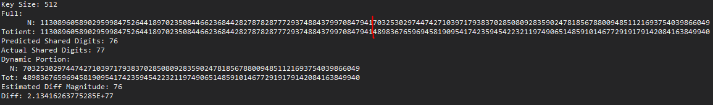
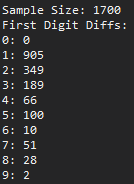
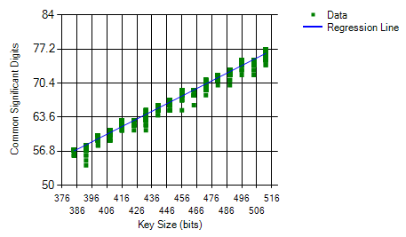
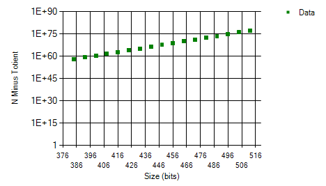
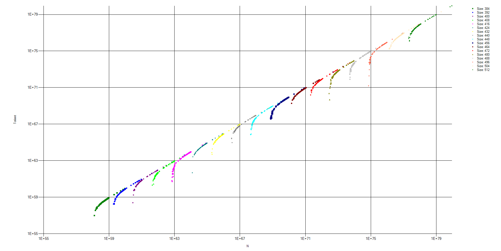

Code Libraries and Implementations
- Using Microsoft .NET library for prime generation
- Using Extreme.Mathematics implementation of BigInteger and BigFloat
- All loops are done in parallel if possible to maximize resource utilization and (hopefully) reduce the amount of time it takes to run
Base Assumptions
- Key size is between 384 and 16384 bits
- n = p * q with p and q being similarly sized, sufficiently large primes
- n will always be odd (mod 2 = 1)
- ϕ(n) = (p-1) * (q-1)
- ϕ(n) will always be even (mod 2 = 0)
- n > ϕ(n)
- n (and its size) are always known
- p, q, and ϕ(n) are unknown
Discovered Relationships between n and ϕ(n)
-
n and ϕ(n) share roughly half of the same significant digits. From this, n and ϕ(n) can each be broken into two parts, a static part (the base) and a dynamic part. The static parts of each number are equal while the dynamic parts are not.

- Since the base does not change, it can be removed from n and ϕ(n) until it is needed for calculations. From this point, all references to n and ϕ(n) are in regard to their respective dynamic parts.
- A range can be constructed with the maximum value of n and a minimum value of 0 (with the same number of significant digits as n). The unknown value ϕ(n) will be contained somewhere within this range.
- Iterating through the range would take a unreasonable amount of time (although significantly less time than in true brute force attempts). This time can be slightly reduced by accounting for the fact that ϕ(n) is always going to be even, therefore odd numbers can be excluded from the range.
- The Ratio of the size of the key and the magnitude of the difference between n and ϕ(n) is always roughly 6.7. Additionally, graphing the differences of the two numbers shows that the differences grow linearly with the size of the key. This can be used to further verify the amount of shared digits. These two estimators are almost always within 1 digit of the true number of shared digits.
-
The first digit to differ has a >50% chance to differ by only 1, then a >20% chance to differ by 2, and so on. The majority of the time, the difference is by less than 5.

Sample Graphs

Significant Digits in Common vs Key Size

Difference between N and ϕ(N) vs Key Size

N vs ϕ(N)